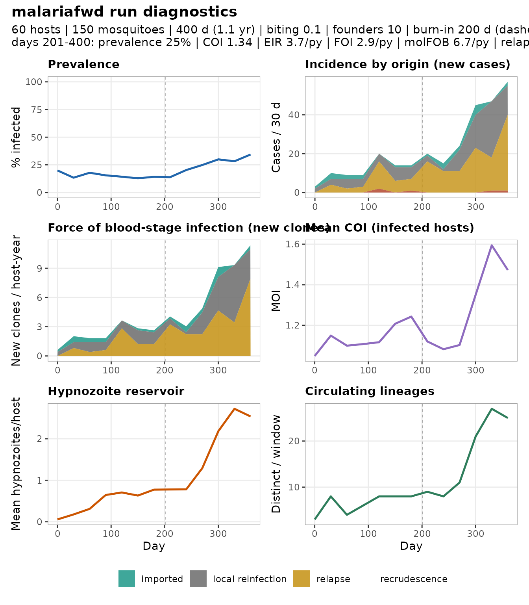
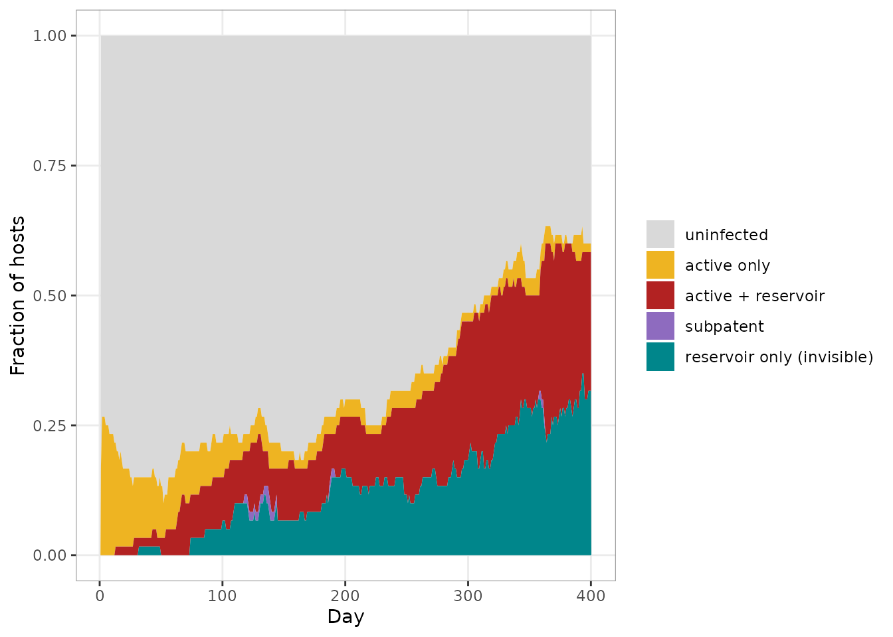
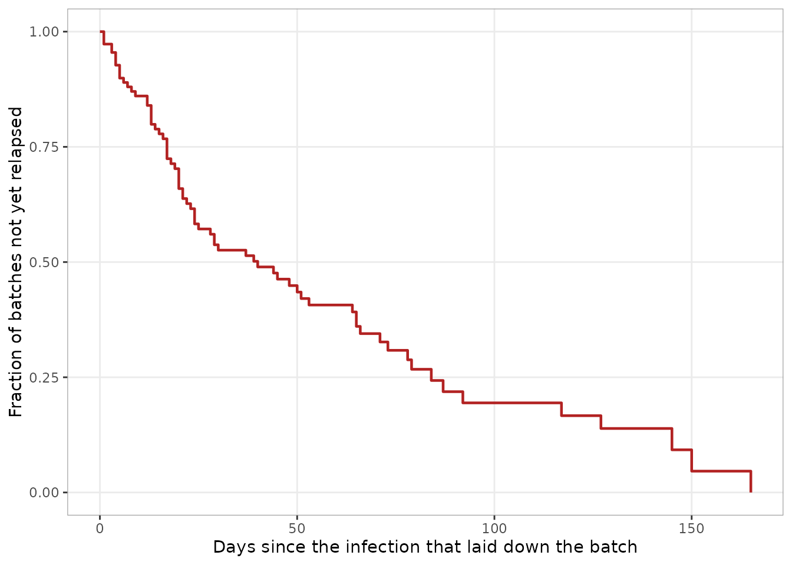

malariafwd is an R interface to a SLiM + tskit forward
simulator of Plasmodium vivax. You run the model from R and
analyse its outputs — including ground-truth
identity-by-descent from the recorded tree sequence.
The analysis below reads example_run(), a small run that
ships with the package, so this page shows real output. The chunks that
run the model are shown but not run here, since they need SLiM; run them
yourself after checking your setup.
Setup
The model runs the external slim binary (SLiM ≥ 5.2) as
a subprocess. The functions for identity by descent (IBD) and the
ancestral recombination graph (ARG) also need Python with
tskit (≥ 1.0) and numpy, through
reticulate: with no Python chosen, reticulate sets up its
own environment with them the first time one of these functions runs
(this needs internet once), or set RETICULATE_PYTHON to a
Python that has them. Without SLiM you can still read
example_run(); without Python only the IBD and ARG sections
stop. Check both:
One simulation
vivax_params() gives a validated parameter set (all
defaults mirror the model); override what you need.
run_sim() launches SLiM and returns a
vivax_run pointing at the outputs. The run’s directory
appears when the run has finished, and a directory that already holds a
run is not replaced unless you pass overwrite = TRUE.
p <- vivax_params(N_HOSTS = 100, N_MOSQ = 250, BITING_RATE = 0.1, SIM_DAYS = 548)
run <- run_sim(p, seed = 1, outdir = file.path(tempdir(), "demo")) # a few seconds on a laptopEvery parameter, with its unit and the values it may take, is in
?vivax_params and param_info(). Here the run
is the bundled one, 60 hosts and 150 mosquitoes for 400 days with
imports, case management, recrudescence and co-transmission (several
genotypes in a bite) switched on. summarise_run() gives its
epidemiology: prevalence, the complexity of infection (COI, the distinct
lineages in an infected host), the entomological inoculation rate (EIR,
infectious bites per person-year), the force of infection (FOI, new
clones from bites and imports) and the molecular force of blood-stage
infection (molFOB, new clones from bites, imports and relapses):
library(malariafwd)
param_info(c("N_HOSTS", "BITING_RATE"))
#> name group default type unit
#> <char> <char> <char> <char> <char>
#> 1: N_HOSTS Population 40 whole number hosts
#> 2: BITING_RATE Transmission 0.1 number per mosquito per day
#> allowed
#> <char>
#> 1: whole number >= 1
#> 2: number > 0; a mosquito bites at most once a day, so it warns when the peak over the run, with its seasonal, intervention and resurgence multipliers, passes 1
#> meaning
#> <char>
#> 1: Humans; the number is constant.
#> 2: Daily probability that a mosquito bites. Bites per human per day are BITING_RATE x N_MOSQ / N_HOSTS, not this value.
#> source
#> <char>
#> 1: <NA>
#> 2: <NA>
#> setting
#> <char>
#> 1: prevalence and COI are scale-dependent, so a transmission rate fitted at one population size does not transfer: calibrate at the size you will publish (roadmap S10)
#> 2: the main transmission knob, but prevalence and complexity of infection are scale-dependent, so a value fitted on a small population does not transfer: calibrate it at the population size you will publish (roadmap S10)
run <- example_run()
run
#> <vivax_run> seed 2
#> outdir: <tempdir>/malariafwd-example-run-60b2e786
#> 400 days, 60 hosts, 150 mosquitoes
#> non-default:
#> SIM_DAYS = 400
#> N_HOSTS = 60
#> N_FOUNDER_HOSTS = 16
#> N_FOUNDER_LINEAGES = 10
#> N_MOSQ = 150
#> LAMBDA_OOCYSTS = 1
#> LAMBDA_SPOROZOITES = 1.5
#> RADCURE_COVERAGE = 0.3
#> BLOODCURE_COVERAGE = 0.5
#> P_BLOODCURE_SURVIVAL = 0.1
#> P_RECRUD_GIVEN_FAIL = 0.5
#> P_DETECT_RELAPSE = 0.5
#> IMPORT_START = 1
#> IMPORT_RATE_PER_TICK = 0.05
#> SLiM 5.2, malariafwd 0.1.0
ev <- load_events(run) # one row per event; ?events.tsv describes the columns
st <- load_state(run) # per-tick host state
summarise_run(run) # over the second half of the run
#> from_tick to_tick n_days exclude_masked extinct extinct_tick never_started
#> <int> <int> <int> <lgcl> <lgcl> <int> <lgcl>
#> 1: 201 400 200 FALSE FALSE NA FALSE
#> prevalence_frac coi_mean coi_median polyclonal_frac hypnozoites_per_host
#> <num> <num> <num> <num> <num>
#> 1: 0.2503333 1.338549 1 0.2563249 1.705667
#> eir_per_py foi_per_py molfob_clones_per_py molfob_episodes_per_py
#> <num> <num> <num> <num>
#> 1: 3.680417 2.92 6.722083 6.782917
#> relapses_per_py_at_risk relapse_frac_episodes relapse_frac_acquisitions
#> <num> <num> <num>
#> 1: 5.55657 0.5605381 0.5656109
#> imported_frac n_imported n_local_reinfection n_relapse n_relapse_masked
#> <num> <int> <int> <int> <int>
#> 1: 0.1354167 13 83 125 69
#> n_recrudescence n_bloodstage_courses person_years person_years_at_risk
#> <int> <int> <num> <num>
#> 1: 2 58 32.87671 22.49589Sense-check the run
plot_diagnostics() is a one-call health dashboard —
prevalence, incidence and force of infection by origin (FOI vs molFOB),
COI, the hypnozoite reservoir, and circulating-lineage richness over
time — so you can spot extinction, saturation, or non-stationarity at a
glance.
plot_diagnostics(run)
Ground-truth IBD
ibd_pairs() computes genome-wide IBD from the tree
sequence, keyed by pedigree id, and ibd_lookup() reads a
pair’s value (NA for a genome the object does not hold). A
relapse is clonal to the hypnozoite batch it woke from (IBD = 1). These
chunks need Python with tskit:
cs <- classify_cases(ev) # each case by TRUE origin
x <- ibd_pairs(run, ids = cs$pedigree_id)
x # genomes, pairs, and where they came from
#> <vivax_ibd> 299 genomes, 44551 pairs, min_span 1000 bp
#> segments: not computed
#> from <tempdir>/malariafwd-example-run-60b2e786/plasmo.trees, ending on tick 400
ibd_lookup(x, cs$pedigree_id[1], cs$pedigree_id[2])
#> [1] 0
ibd_truth_pairs(run)[cls == "relapse vs its origin", summary(ibd)] # up to 60 relapses vs their batches: 1
#> Min. 1st Qu. Median Mean 3rd Qu. Max.
#> 1 1 1 1 1 1
head(recurrences(ev, ibd = x)) # each recurrence vs the host's earlier episodes
#> human_id episode_id tick pedigree_id lineage_id origin imported
#> <int> <char> <int> <int> <char> <char> <lgcl>
#> 1: 2 2:237 237 596 2 relapse FALSE
#> 2: 2 2:284 284 766 7 local reinfection FALSE
#> 3: 2 2:284 284 766 7 local reinfection FALSE
#> 4: 2 2:298 298 828 2 relapse FALSE
#> 5: 2 2:298 298 828 2 relapse FALSE
#> 6: 2 2:298 298 828 2 relapse FALSE
#> detected into_patent_lineage prior_episode_id prior_tick prior_pedigree_id
#> <int> <lgcl> <char> <int> <int>
#> 1: 1 TRUE 2:230 230 577
#> 2: 1 FALSE 2:230 230 577
#> 3: 1 FALSE 2:237 237 596
#> 4: 0 FALSE 2:230 230 577
#> 5: 0 FALSE 2:237 237 596
#> 6: 0 FALSE 2:284 284 766
#> prior_lineage_id prior_origin prior_imported prior_detected days_since
#> <char> <char> <lgcl> <int> <int>
#> 1: 2 local reinfection FALSE 1 7
#> 2: 2 local reinfection FALSE 1 54
#> 3: 2 relapse FALSE 1 47
#> 4: 2 local reinfection FALSE 1 68
#> 5: 2 relapse FALSE 1 61
#> 6: 7 local reinfection FALSE 1 14
#> ibd
#> <num>
#> 1: 1
#> 2: 0
#> 3: 0
#> 4: 1
#> 5: 1
#> 6: 0
new_infection_diversity(run) # relatedness of the transmitting population
#> win days n n_pairs mean_ibd clonal_frac n_lineages
#> <int> <int> <int> <int> <num> <num> <int>
#> 1: 201 200 96 4560 0.1263772 0.1243421 43ibd_pairs() counts all shared ancestry, however far back
it goes. Ask for segments to get the shared blocks
themselves: each a maximal stretch inherited from one common ancestor,
cut at the chromosome junctions, and tagged with that ancestor:
sg <- ibd_pairs(run, ids = cs$pedigree_id[1:50], segments = TRUE)
head(sg$segments) # a, b, chrom, start, end, gstart, gend, length, mrca_id, mrca_time, depth
#> a b chrom start end gstart gend length mrca_id mrca_time
#> <int> <int> <int> <num> <num> <num> <num> <num> <int> <num>
#> 1: 51 121 1 0 1021664 0 1021664 1021664 23 397
#> 2: 51 121 2 0 956327 1021664 1977991 956327 23 397
#> 3: 51 121 3 0 896704 1977991 2874695 896704 23 397
#> 4: 51 121 4 0 1012024 2874695 3886719 1012024 23 397
#> 5: 51 121 5 0 1524814 3886719 5411533 1524814 23 397
#> 6: 51 121 6 0 1042791 5411533 6454324 1042791 23 397
#> depth
#> <num>
#> 1: 10
#> 2: 10
#> 3: 10
#> 4: 10
#> 5: 10
#> 6: 10
## IBD from ancestors of the last six months only
head(sg$segments[depth <= 180, .(ibd_180 = sum(length) / sg$sequence_length), by = .(a, b)])
#> a b ibd_180
#> <int> <int> <num>
#> 1: 51 121 1.0000000
#> 2: 51 134 1.0000000
#> 3: 51 152 1.0000000
#> 4: 51 253 0.4667196
#> 5: 51 261 0.4667196
#> 6: 51 281 1.0000000mrca_time is a tskit node time – ticks before the
end of the run, not an age. A “recent ancestry only”
variant filters on depth, the age of each segment’s common
ancestor measured from the pair itself (for example
sg$segments[depth <= 180]), never on
mrca_time alone: that scores a pair by when its lineage
last branched rather than by how related the two genomes are, which
inverts the relapse-vs-reinfection comparison. See
?ibd_pairs.
Parallel sweeps
run_grid() runs every (parameter set × seed) in parallel
via the future backend. Set workers to the
cores you can spare for a quick local multisession; for a cluster, set
future::plan() yourself and leave
workers = NULL. Every set, and every cell’s directory, is
checked before any cell starts. A cell that already holds its run is not
run again, so calling run_grid() again with the same
arguments resumes a grid that stopped part-way, and adding seeds runs
only the new cells. grid.tsv in the grid’s directory
records every cell, and load_grid() reads it back.
sets <- list(
low = vivax_params(BITING_RATE = 0.06),
high = vivax_params(BITING_RATE = 0.12)
)
base <- file.path(tempdir(), "sweep")
res <- run_grid(sets, seeds = 1:10, outdir_base = base, workers = 2) # 20 short runs, about 10 s
res # one row per cell: set, seed, outdir, ok, skipped, error, extinct_tick, never_started,
# elapsed_s, finished, slim_version, malariafwd_version, and BITING_RATE, which varies
load_grid(base) # the same table, from grid.tsvPlots


See ?run_sim, ?ibd_pairs and
?malariafwd, the model
description, and the design
decisions for more.